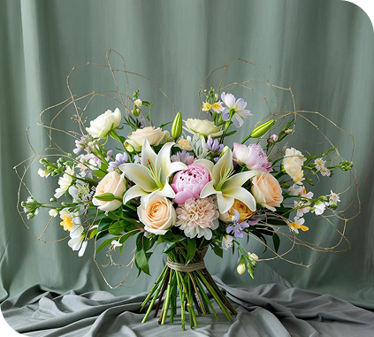
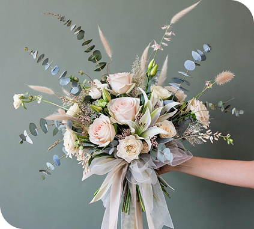
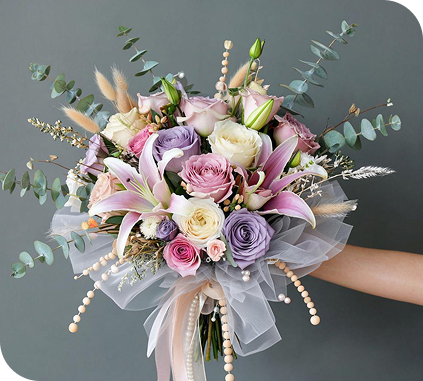
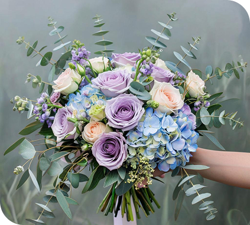
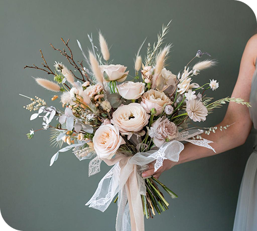
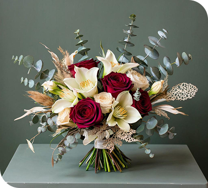
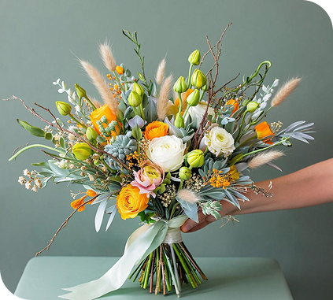

Классические букеты

Весенний день
Яркий букет из весенних тюльпанов и нарциссов. Подарит весеннее настроение в любое время года.
2 800 ₽

Нежность пионов
Яркий букет из весенних тюльпанов и нарциссов. Подарит весеннее настроение в любое время года.
4 200 ₽

Белый шик
Элегантная композиция из белых лилий и гортензий - символ чистоты и совершенства. Идеален для торжественных мероприятий.
4 800 ₽

Розовый туман
Нежные розы и пионы в пастельных тонах выражают восхищение и нежность. Совершенство для романтических подарков.
2 800 ₽

Фиолетовый туман
Глубокие фиолетовые орхидеи и ирисы создают загадочную и романтическую атмосферу.
5 500 ₽

Летний рассвет
Нежные полевые цветы в естественной композиции. Свежесть и простота в каждом стебле.
3 300 ₽

Темная ночь
Загадочная композиция в глубоких темных оттенках. Букет для тех, кто ценит элегантность и таинственность.
5 800 ₽

Зимняя сказка
Белые розы и эвкалипт создают образ зимней чистоты и свежести. Элегантно и торжественно.
4 700 ₽

Золотой восход
Солнечные герберы и хризантемы дарят радость и оптимизм. Яркие цвета поднимут настроение в любой день.
3 200 ₽
Свадебные букеты

Свадебная феерия
Роскошный свадебный букет невесты в классическом стиле. Белоснежные розы и орхидеи символизируют чистоту и вечную любовь.
7 200 ₽

Невеста в розовом
Нежный свадебный букет в пастельных розовых тонах. Пионы и ранункулюсы создают мягкий романтичный образ.
6 500₽

Морская невеста
Свадебный букет в морской тематике с голубыми и белыми оттенками. Идеален для пляжной свадьбы или церемонии у воды.
2 800 ₽

Викторианская элегантность
Свадебный букет в викторианском стиле с кружевными цветами и нежными оттенками. Романтика XIX века в современном исполнении.
8 200 ₽

Страсть и чистота
Смелый свадебный букет, где алые розы становятся ярким акцентом на фоне белоснежных цветов. Символизирует страстную любовь и чистоту чувств.
8 700 ₽

Сельское очарование
Свадебный букет в стиле рустик с полевыми цветами и зеленью. Естественная красота и простота для свадьбы на природе.
5 200 ₽
Отзывы наших клиентов
часто задаваемые вопросы
Как заказать букет с определенным посланием?
Вы можете обратиться к нашему консультанту, который поможет подобрать цветы и составить
композицию, точно передающую ваши чувства. Мы также предлагаем онлайн-консультации, где
вы
можете подробно обсудить детали вашего заказа.
Каждый наш флорист владеет языком цветов и поможет создать букет, который будет говорить
именно то, что вы хотите выразит
Можно ли заказать доставку в другой город?
Да, мы осуществляем доставку по всей России через партнерские службы доставки. Сроки и
стоимость доставки зависят от удаленности города и выбранного способа доставки.
Для заказа доставки в другой город свяжитесь с нашим менеджером, который рассчитает
точную
стоимость и сроки.
Как долго сохраняют свежесть ваши букеты?
Мы работаем только с самыми свежими цветами от проверенных поставщиков. При правильном
уходе
наши букеты сохраняют свежесть от 7 до 14 дней.
К каждому заказу мы прилагаем подробную инструкцию по уходу, которая поможет продлить
жизнь
вашим цветам. Также наши флористы могут дать персональные рекомендации по уходу за
конкретными видами цветов.
Какие способы оплаты вы принимаете?
Мы принимаем следующие способы оплаты:
Наличными курьеру при получении
Банковской картой онлайн на сайте
Apple Pay и Google Pay
Безналичный расчет для юридических лиц
Все онлайн-платежи защищены современными системами шифрования.
Можно ли изменить заказ после его оформления?
Да, вы можете изменить детали заказа до момента его передачи курьеру. Для этого свяжитесь с нашим менеджером по телефону, указанному на сайте. Если вы хотите изменить адрес доставки, время или состав букета, сообщите об этом как можно скорее. Мы сделаем все возможное, чтобы учесть ваши пожелания.
Предлагаете ли вы индивидуальный дизайн букетов?
Да, мы специализируемся на создании индивидуальных букетов, которые отражают уникальные
чувства и истории наших клиентов. Наши флористы работают с вами, чтобы создать именно ту
композицию, которую вы представляете.
Для заказа индивидуального букета рекомендуется обратиться к нам заранее, чтобы у
флористов
было достаточно времени для реализации ваших идей.